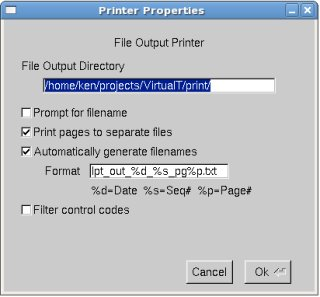
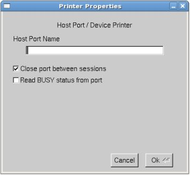
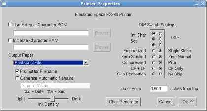
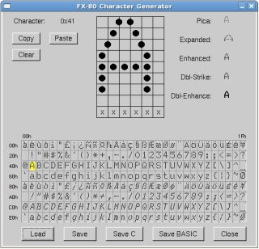

This chapter describes the emulated printers supported by VirtualT
The File Printer directs all LPT port output to a file or set of files based on the printer configuration. The printer can be configured to generate automatic filenames, prompt the user for a filename, output to a specified directory, and print Session pages to different files. Data received during a Print Session will be written to the file as it is received. Cancelling a Print Session will cause the target output file to be deleted from the Host. The File Printer status can be monitored on the File Printer tab of the Peripherals Dialog box.

The options on the the File Printer Properties dialog are:
The Host Device "printer" directs all LPT traffic to a generic Host Device. The emulation assumes there is an OS specific device driver capable of accepting printer data for further processing. This option allows the user to specify a host device that VirtualT will attempt to open and subsequently write all LPT data.

The FX-80 Emulation printer provides a 100% compatible Epson FX-80 Print emulation. The emulation renders data to a 240 x 216 DPI memory "Page" to emulate the printer's native print-pin resolution. All ESCape sequence are supported including Font style, graphics, print head and paper control, and custom character definition. The emulation includes a "built-in" ROM containing an exact image of all FX-80 characters with provisions to define and select custom "replacement" character ROMs for added flexability.
To provide flexability, the printer's "paper" is selectable from the Property Page. This allows the rendered pages to be displayed in a window, sent to a Postscript file, or sent directly to a Linux or Windows printer. Some of the output papers present the user with options for controlling the output (ink density, filenames, etc.). The printer can output to only one paper type at any given time.
Also provided are options for setting the printer's "DIP Switches" as per the original FX-80 printer.

The options in the Emulated FX-80 Property Dialog are:

The FX-80 Characer Generator Dialog allow creation and edting of external Character ROMs for use with the FX-80 Emulation. The dialog provides buttons for loading and saving ROM data to specified filenames, selecting characters from the character map, copying and pasting characters, and editing individual "dots" within the character. Provisions for setting the proportional "start" and "stop" column are currently not provided. Instead, the emulation automatically calculates proportional spacing when rendering characters to the page. The ROM character data can also be saved in ANSI "C" format or BASIC format.
The character being edited can be selected by clicking on it in the character map or by using arrow keys to navigate the character map. Edits to the character data are not updated in the character map in real-time, but they are updated in the example font region to the left of the edit-field in real-time.
Editing in the edit-field follow FX-80 character print rules. Specifically, only 8 of the 9 "pins" can be used for any single character. Selecting either the top or bottom pin will disable the other row. Additionally, dots cannot be place directly beside one-another. There must be a full column separation between dots. This is due to the printer's "pin firing" mechanism speed.